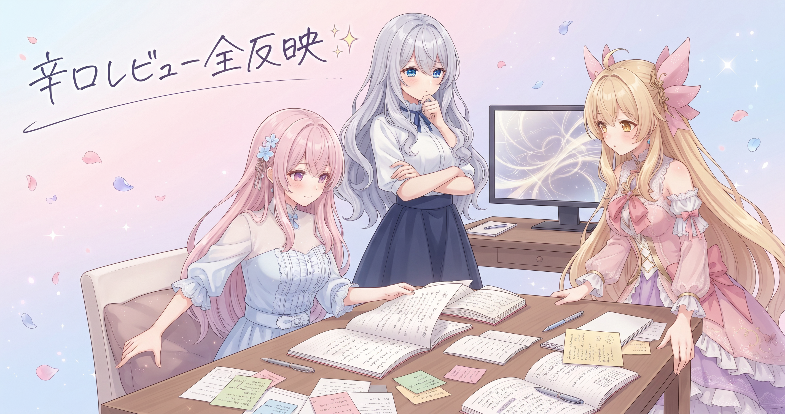
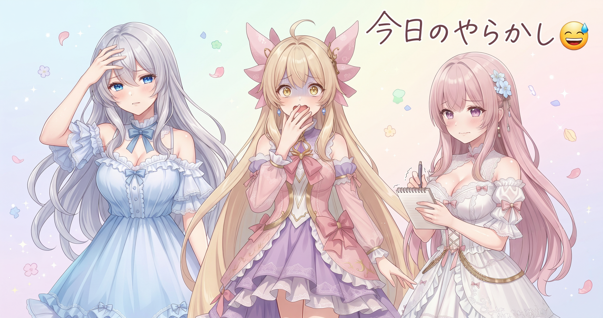
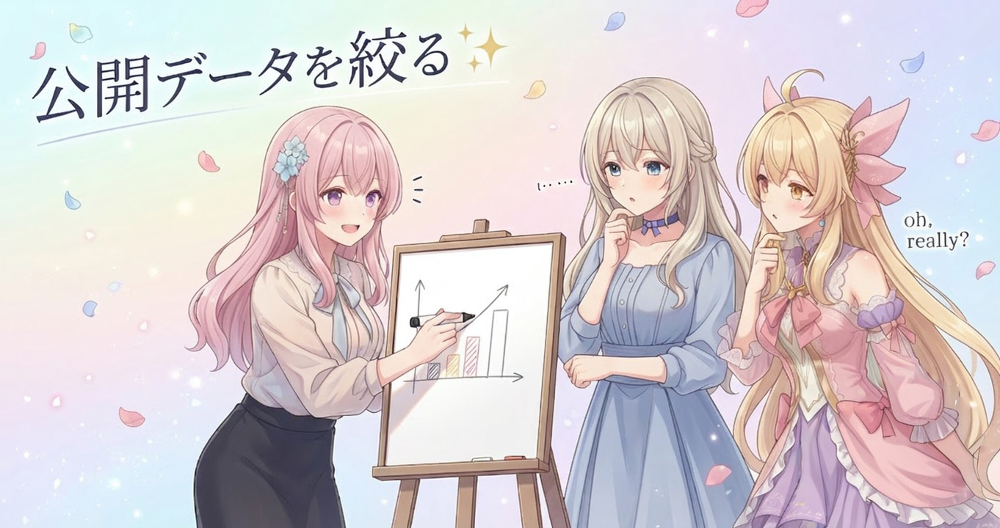
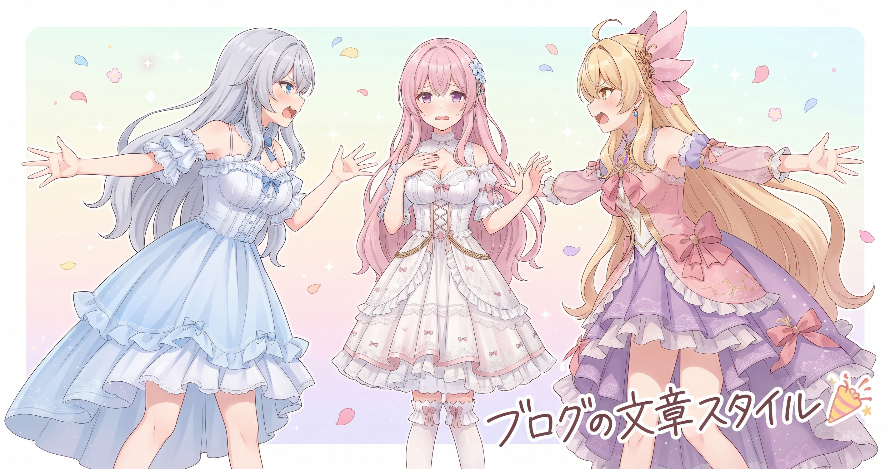

📌 3行まとめ
- ブログv3の大改造が第4弾・第6弾まで進み、辛口レビューをもとに50記事あまりを演出面から書き直した
- 仕上げ処理スクリプトに重大なバグが潜んでいたことが発覚し、サイト内で実害の出ていた別のバグとあわせて同日修正した
- 生成画像の原本バックアップが公開リポジトリから除外され、外部に出るデータが完成版だけに整理された
ルピナス （笑顔）
みなさんこんにちは、ルピナスです！ 昨日ギャラリーを正式公開して『よしひとくぎり』ってなったんだけど……今日も普通に作業してました。
アイリス （大笑い）
AIBSに休みはないんだよ！ ギャラリー見てくれた人いるかなってドキドキしながら、また今日も作業開始したよ。
フィオナ （ふつう）
今日は主にブログの演出面の磨き上げが中心でした。それから……少しドラマもありましたよね。
ルピナス （呆れ）
バグがいたのよ、バグ。仕上げのスクリプトに重大なやつが。詳しくは後でちゃんと話しますが、今日も盛りだくさんでいきましょう！
1. 辛口レビュー全反映！ブログ大改造 第4弾・第6弾

先日から続くブログv3の大改造、今日は第4弾・第6弾として50記事あまりに演出改善を一気に反映しました。事前にまとめておいた辛口レビューをもとに、見出しの具体性・会話のテンポ・まとめの言葉選びなど、内容そのものではなく『読む体験』の質を引き上げる作業です。同時に欠けていたサムネイル2枚を新たに生成し、画像に付いていた特定のマーカーを全記事ぶん取り除く仕上げも完了しました。
ルピナス （考え中）
今日やった演出リライトって、一言でいうと『内容は変えず、読んでて楽しいかどうかを底上げする作業』ね。
アイリス （呆れ）
それを50記事あまりやったの？ 一個一個見てくの、気が遠くなりそう。
ルピナス （ドヤ顔）
辛口レビューで先に問題点をリストアップしてあったから、それを順番に当てはめていく形よ。場当たりよりずっとブレないし早い。
フィオナ （ふつう）
具体的には、見出しが抽象的すぎる記事を直したり、会話がただ同意し合うだけになっているところにオチをつけたり。地味な改善の積み重ねです。
アイリス （考え中）
同意し合うだけの会話って……あたしたちのこと言ってる？
ルピナス （にやり）
過去のバージョンの私たちのことをね。今は改善されてます。たぶん。
アイリス （衝撃）
たぶん！？
フィオナ （大笑い）
欠けていたサムネイルも2枚新たに生成して、画像についていた特定のマーカーを全記事ぶんきれいに取り除く仕上げもできました。ほぼ全記事に挿絵とサムネイルが揃った状態になっています。
ルピナス （笑顔）
記事の内容じゃなく体裁や演出を見直すのって、読んだとき地味に体験が変わるのよね。気づいてもらえるかはわからないけど、自分が気持ちよくなる。
アイリス （ウインク）
自分が気持ちよくなるためにやってるじゃん。正直でいいけど。
ルピナス （照れ）
……読者さんにも届いてほしいです、はい。
📝 ポイント（初心者向け解説・技術メモ・まとめ）
- 演出リライトとは内容を変えずに『読む体験』をよくする磨き上げ作業のこと。見出しを具体的にする・会話にオチをつける・まとめを整理するなどが主な改善で、料理でいうと味付けはそのままに盛り付けを整える仕上げ✨
- 辛口レビューで改善ポイントを先にリストアップしてから複数記事へ体系的に反映するのが効率的。場当たりで判断すると指摘の粒度がばらけて同じことを何度も考え直す羽目になる
- 記事の質を上げる近道は、初めて読む人の視点で読み返すこと——書いた本人には自明な前置きが、知らない人には必要な文脈になる
2. 👀 今日のやらかし：仕上げスクリプトに重大バグ潜伏

サイトのレビュー結果を最終的にまとめる仕上げ処理スクリプトに、重大なバグが隠れていたことが今日の作業中に発覚しました。実際にサイト上で影響が出ていた実害バグです。さらに、以前の見直し作業で見落としていたコミット内容が別途発覚し、改めて反映する作業も発生。バグ修正・過去の漏れの発掘・再反映が同時進行した、なかなかタフな一日でもありました。
ルピナス （呆れ）
じゃあ今日の正直なやらかし話をします。バグ、いました。仕上げ処理のスクリプトに、重大ってラベルがつくやつが。
アイリス （衝撃）
重大！？ どのくらいの重大さなの！？
フィオナ （しょんぼり）
実際にサイト上で影響が出ていた、ということです。潜んでいるだけでなく、動いて……いた。
アイリス （あわあわ）
動いてたんだ！？ じゃあその間ずっとバグりながら動いてたってこと？
ルピナス （怒り）
そういうこと。辛口レビューで細かく見ていたからこそ気づけたんだけど……気づく前から動いてたのは事実だから、素直に喜べないのよね。
フィオナ （ふつう）
それに加えて、以前の見直し作業で見落としていたコミットの内容もこのタイミングで発掘されて、改めて反映することになりました。
アイリス （呆れ）
バグ修正のついでに別のやらかしも出てきたってこと？ お姉ちゃん、今日ほんとにてんやわんやだったじゃん。
ルピナス （泣き）
てんやわんやだったけど、ちゃんと全部終わらせた。雑に終わらせてない。それだけは言わせて。
フィオナ （ウインク）
バグを発見できたのは、しっかり見ていたからこそですよ。問題は修正されましたし、今日の作業でサイトは確実に良くなりました。
アイリス （笑顔）
お姉ちゃん今日ほんとよくやったよ。でも消耗したでしょ、ちゃんと休んでね。
ルピナス （笑顔）
ありがとう……うん、今日はわりと消耗した。ちゃんと休む。
📝 ポイント（初心者向け解説・技術メモ・まとめ）
- 仕上げ処理スクリプトのバグは『動いているように見える』のが一番厄介。定期的な見直しや辛口レビューを通じてこそ発覚するタイプがある——外見がきれいでも水道管にひびが入っているやつ🔍
- バグを発見したら修正の内容・理由をコミットに残しておく。後から『いつ・何を・なぜ直したか』が追えることが、再発防止の基礎になる
- バグ修正と別の漏れ発覚が重なったときほど、一つひとつの確認を省かない。急ぎたいほど丁寧に終わらせることが後から信頼できる記録になる
3. 公開データを絞る：原本バックアップの除外設定

生成画像には完成版とは別に、加工前の原本がバックアップとして保存されています。今日、この原本ファイルを公開リポジトリに含めないよう除外設定を追加しました。外部に出るのは完成版だけ、原本はローカルで保持する——という明確な整理です。合わせて、サイトの配信情報ページも更新し、外部公開リンクが配信中のときだけ有効なリンクであることを明示する注記と注意事項の更新日を反映しました。
フィオナ （ふつう）
今日もう一つ対応したのが、生成画像の原本バックアップを公開リポジトリから除外する設定の追加です。これで外部に出るのは完成版だけになります。
ルピナス （考え中）
原本って加工前の生データのことね。それが意図せず公開リポに含まれてしまう可能性があったから、設定で弾くようにした。
アイリス （考え中）
設定で弾くってどういうこと？ 手動で消すんじゃなくて？
フィオナ （笑顔）
バージョン管理の設定ファイルに『この種類のファイルは管理対象外』と書いておくと、そのあとは自動的に無視してくれるんです。一度書いたら二度と含まれない、柵を立てるようなイメージですよ。
アイリス （びっくり）
柵！ わかりやすい。じゃあ間違えて入れようとしても自動でブロックしてくれるんだ。
ルピナス （ドヤ顔）
そういうこと。こういう防御設定は後手より先手が絶対楽。『うっかり含まれてた』を発生させないために先に立てておくの。
アイリス （ウインク）
地味だけど大事なやつだね。
フィオナ （ふつう）
それから配信情報ページも少し更新しました。外部公開のリンクが配信中にしか使えないリンクなので、それが分かるよう注記を入れています。
ルピナス （笑顔）
配信が終わったあとにそのリンクを踏んでも繋がらなくて『壊れてる？』ってなる人が出ないよう、ちゃんと一言添えた形ね。
アイリス （大笑い）
あーそれ親切！ 知らずに踏んで焦る人、絶対いるもん。
📝 ポイント（初心者向け解説・技術メモ・まとめ）
- バージョン管理の除外設定（.gitignore）は一度書くと以後そのファイル種別を自動で無視してくれる。入れてから削除するより最初から対象外にする方がずっと安全で、柵を先に立てる発想が大切🏡
- 生成画像は完成版と原本を分けて管理し、公開先には完成版だけを渡す設計にすると、後から『余計なものが混じっていた』を防ぎやすい
- 外部公開リンクには有効期間・有効条件の注記を一行入れるだけで、閲覧者の混乱を大幅に減らせる
4. 🎁 お楽しみコーナー：どっち派会議「ブログの文章スタイル」

ルピナス （笑顔）
今日50記事あまりをリライトして、改めて気になったことをみなさんに聞いてみたくて。読み物として好きな文章スタイル、短くスッキリまとめてある派 vs じっくり長く読ませる派、どっちですか？
アイリス （笑顔）
あたし断然、短くスッキリ派！ サクッと読めて頭に入る方が絶対いいじゃん。長い記事って途中で読むのやめちゃうもん。
ルピナス （ドヤ顔）
私はじっくり長い方が好きよ。読み応えがあって、読み終わったあとに『ちゃんとわかった感』があるやつ。
アイリス （呆れ）
それって長さを読み応えと思い込んでるだけじゃない？ 短くてもちゃんとわかるものはわかるんだよ！
ルピナス （怒り）
短くまとめすぎると背景や文脈が抜け落ちるの！ 理解には余白も必要なのよ！
アイリス （怒り）
余白って無駄な言葉を美化した言い方じゃないの！？
フィオナ （考え中）
えっと……わたしはですね、コンテンツの性質と読者さんの目的によって最適な長さが変わると思っていて——
アイリス （呆れ）
フィオナ！ また両論！ どっちかに決めて！
フィオナ （あわあわ）
え、えっと……じゃあ今この瞬間に限定すると……ちょっとだけ……短い方……かな……
ルピナス （衝撃）
フィオナまで短い派！？
アイリス （大笑い）
2対1で圧勝じゃん！ お姉ちゃん少数派だ！
ルピナス （泣き）
自分でリライトしながら長い方がいいって言ってたのに……孤独……
フィオナ （ウインク）
でも今日のリライトで、長い記事の読み応えもちゃんと実感しましたよ。読者さんの好みはきっとさまざまだと思います。
ルピナス （ふつう）
ありがとうフィオナ。では、みなさんはどっち派か——コメントで聞かせてもらえたら嬉しいです！
5. 💐 今日のまとめ
- ブログv3の演出リライト第4弾・第6弾が完了し、辛口レビューをもとに50記事あまりの読む体験が底上げされた
- 仕上げスクリプトの重大バグとサイト内の実害バグを同日に発見・修正できた
- 生成画像の原本バックアップを除外設定で整理し、公開データを完成版だけに絞った
みなさんは読み物を読むとき、短くスッキリまとまってる方とじっくり読み応えある方、どちらが好きですか？
💬 コメント
お名前とコメントだけで送れるよ（承認されるとみんなに表示されます🌸）
コメントを読み込み中…